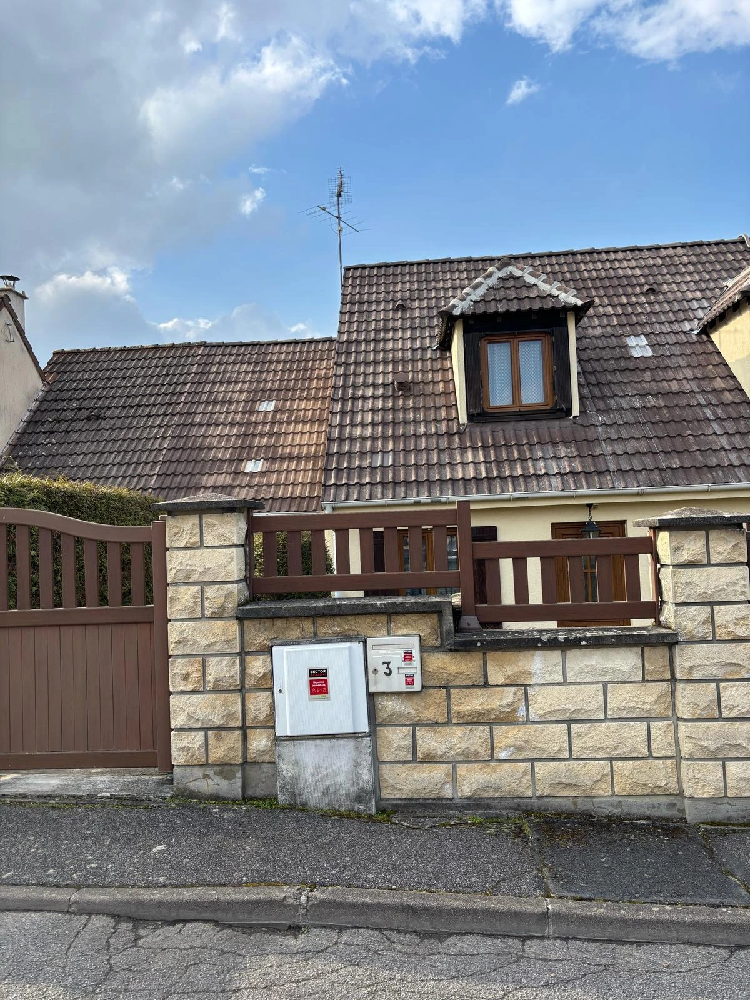
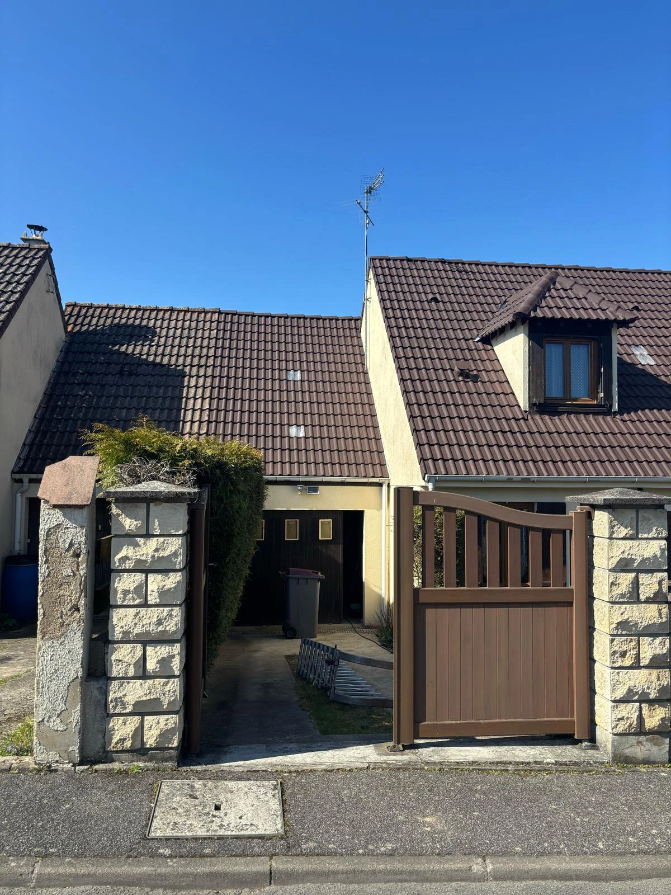
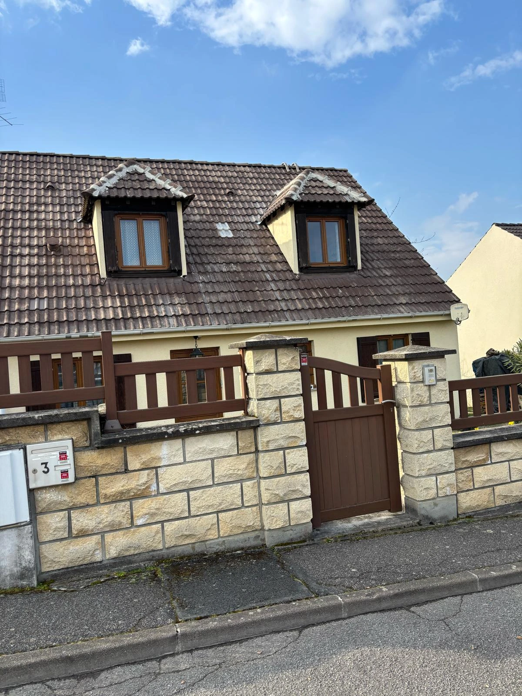
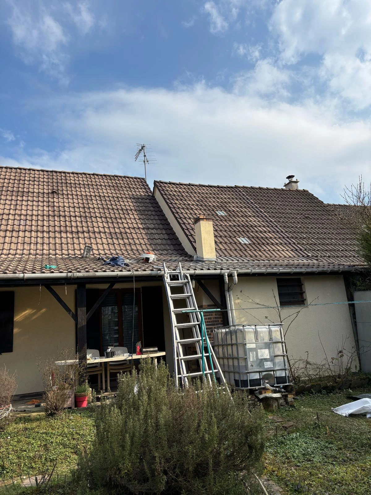
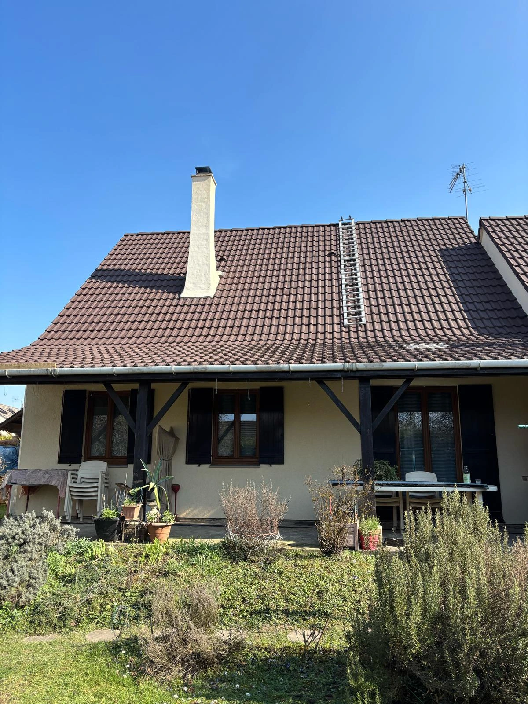
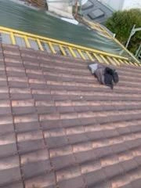
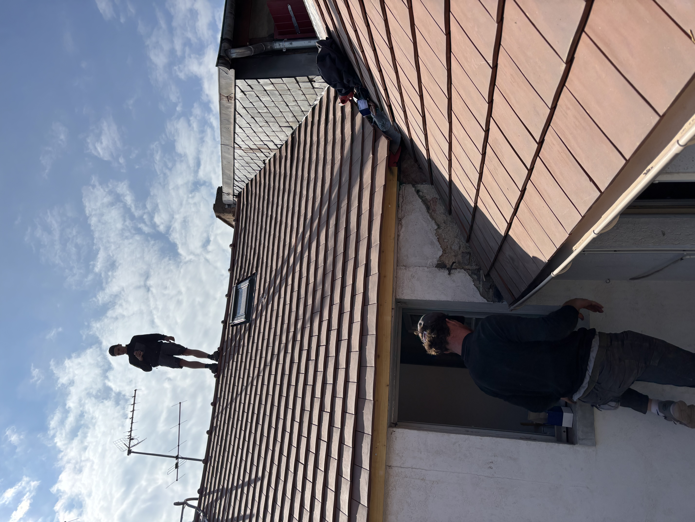
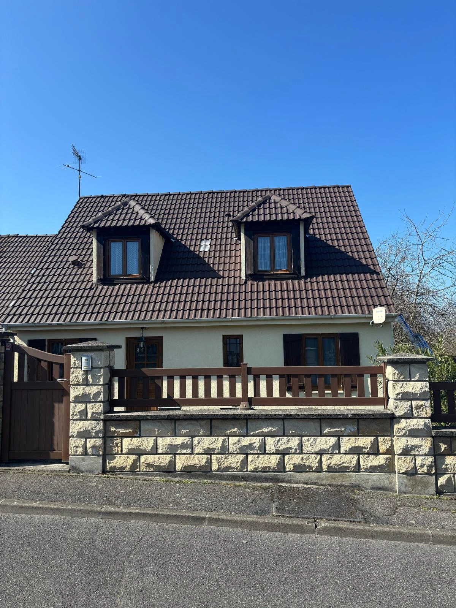

FK Toiture
FK Toiture vous proposé des services complets pour votre toiture : zinguerie, réparation de toiture, charpente, peinture extérieure, isolation des combles, démoussage et nettoyage, étanchéité, pose de gouttières zinc et PVC ainsi que l’installation de fenêtres de toit. Basés dans le Haut-Rhin (68), nous intervenons rapidement dans toute l’Centre-Val de Loire pour protéger et valoriser votre habitation. Faites appel ànotre savoir-faire pour des travaux durables et de qualité.
NOS RÉALISATIONS











FAITES CONFIANCE À NOS PROFESSIONNELLES DIPLÃâ€MÉS ET LEUR SAVOIR-FAIRE
Spécialistes en couverture dans le 68 (Haut-Rhin), notre équipe expérimentée vous assure des résultats de haute qualité. Chaque membre de notre équipe met son savoir-faire au service de vos besoins, avec pour objectif de surpasser vos attentes. Nous offrons une gamme complète de prestations, incluant la réparation et l’étanchéité de toiture, le nettoyage et le démoussage, ainsi que la peinture et le ravalement de façade. Faites appel ànotre expertise pour des services qui allient protection et valorisation de votre habitation.
CONTACTEZ - NOUS

FAQ - Couvreur dans le Haut-Rhin
Quels sont les services proposés par un couvreur dans le Haut-Rhin ?
FK Toiture propose dans tout le Haut-Rhin (68) la réparation de toiture, le nettoyage et démoussage, l'isolation des combles, l'étanchéité de toit terrasse, la peinture de toiture, la pose de gouttières zinc et PVC, la pose de fenêtres de toit (velux), le ravalement de façade et l'intervention d'urgence en cas de fuite.
Pourquoi faire appel àun couvreur professionnel dans le Haut-Rhin ?
Un couvreur professionnel garantit des travaux conformes aux normes, sécurisés et durables. Il dispose de l'équipement adapté, d'une assurance décennale et de la connaissance des matériaux (tuiles, zinc, ardoise, bac acier) propres au bâti alsacien et aux conditions climatiques du Haut-Rhin.
Combien coûte une intervention de couvreur dans le 68 ?
Le tarif d'un couvreur dans le Haut-Rhin dépend du type de travaux : àpartir de 200 € pour une réparation ponctuelle, 10 à25 €/m² pour un nettoyage, 30 à90 €/m² pour une isolation. Nous établissons un devis gratuit et détaillé après visite ou échange téléphonique.
Intervenez-vous en urgence pour une fuite de toiture dans le Haut-Rhin ?
Oui, nous intervenons rapidement dans tout le département du Haut-Rhin pour les fuites de toiture, les dégâts liés aux tempêtes ou aux infiltrations. Nous protégeons votre habitation (bâchage si nécessaire) et organisons la réparation définitive dans les meilleurs délais.
Quelles communes du Haut-Rhin couvrez-vous ?
FK Toiture intervient dans tout le Haut-Rhin : Mulhouse, Riedisheim, Brunstatt-Didenheim, Pfastatt, Illzach, Lutterbach, Kingersheim, Morschwiller-le-Bas, Sausheim, Richwiller, Rixheim, Zimmersheim, Bruebach, Flaxlanden, Eschentzwiller, Zillisheim, Hochstatt, Wittenheim, Habsheim, Baldersheim et les communes environnantes.